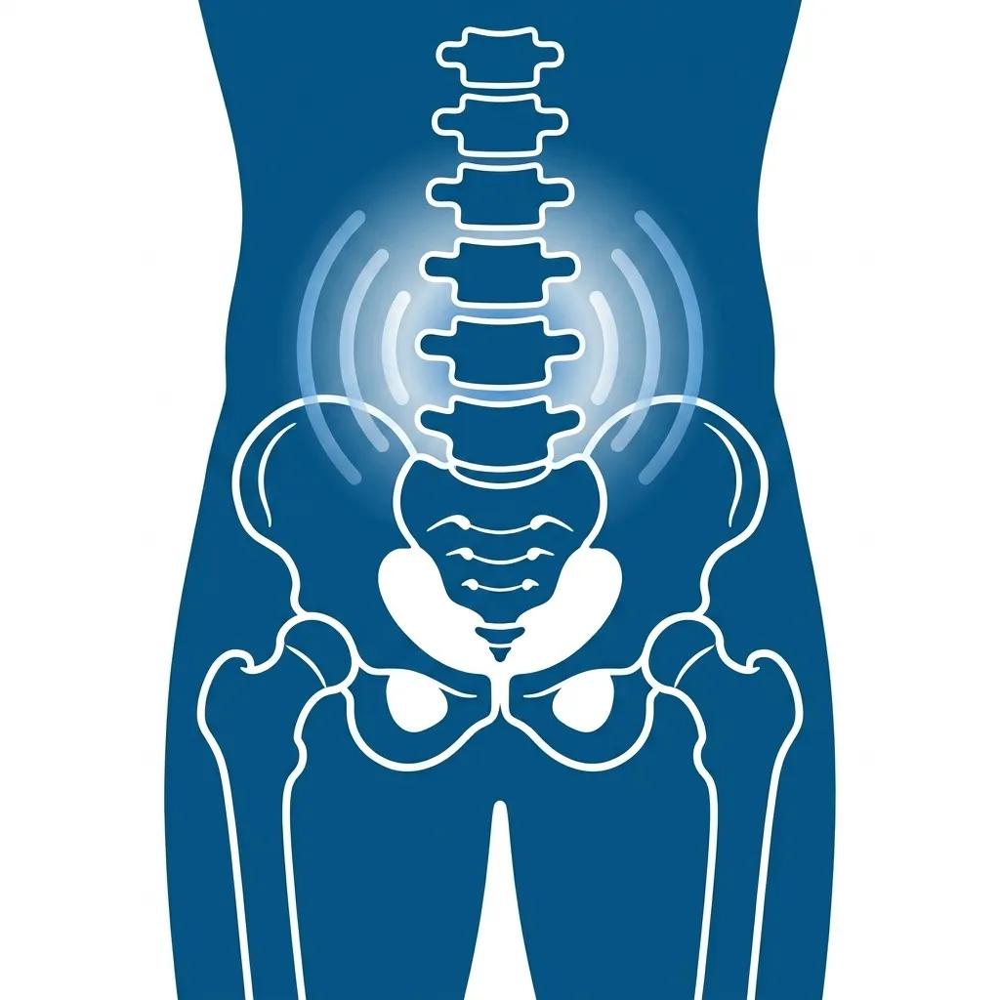
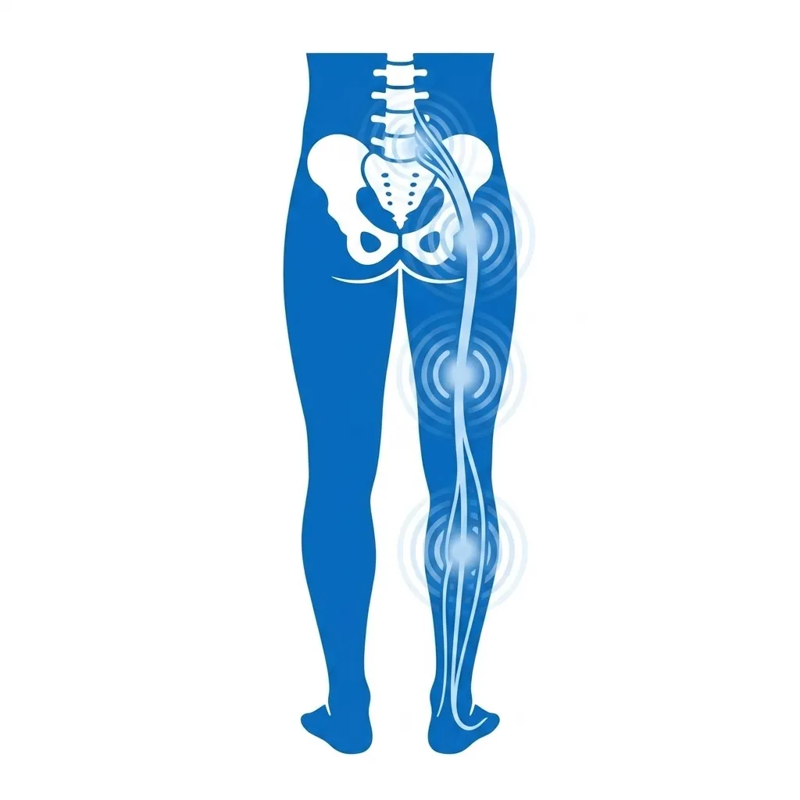
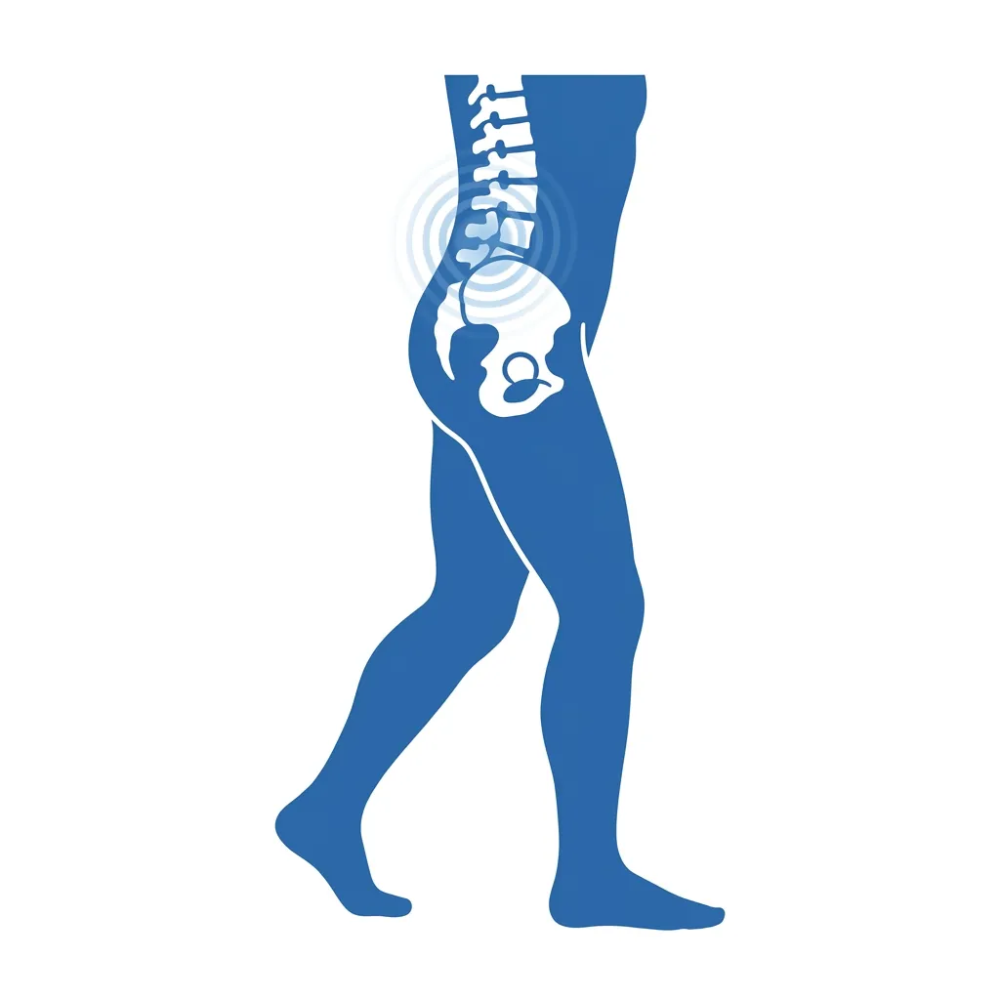
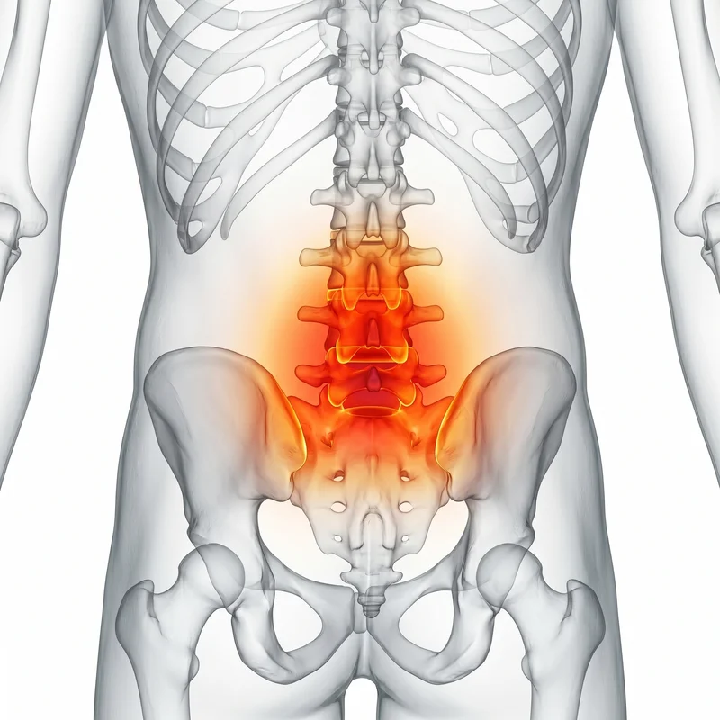

Lumbar Spine Clinic
일상을 뒤흔드는 허리통증,
요추 디스크와 협착에 있습니다.
통증을 견디는 것보다 중요한 것은 구조적 원인의 해결입니다.
삼성365의원의 정밀 진단으로 허리통증의 핵심 원인을 찾아냅니다.
절대 방치해선 안 될 허리통증의 신호
삶의 질을 서서히 무너뜨리는 허리통증의 위험 증상들을 체크해 보세요.

앉았다 일어날 때 심한 요통
오랫동안 앉아있다 일어서는 순간 허리에 극심한 통증이 발생하며, 처음 몇 걸음이 특히 힘듭니다.

엉덩이·다리까지 뻗는 방사통
허리에서 시작된 통증이 엉덩이, 허벅지, 종아리, 발끝까지 이어지는 좌골신경통이 동반됩니다.

오래 걷기 힘든 간헐성 파행
몇 분 걷다 보면 다리가 저리고 무거워져 쉬었다 다시 걸어야 하는 증상이 반복됩니다. 협착증의 전형적 신호입니다.
Medical Insight

허리는 온몸의 무게를
홀로 감당합니다.
요추(허리 척추)는 전신 체중의 대부분을 지지하는 구조물입니다. 잘못된 자세나 노화로 인해 디스크가 팽창하거나 수핵이 탈출하면 주변 신경을 압박하여 극심한 통증과 하지 방사통을 유발합니다. 척추관협착증으로 진행되면 신경 통로 자체가 좁아져 보행 능력까지 저하됩니다.
신경 압박 해소와
다열근 기능 회복
수술 없이 회복할 수 있는 핵심은 압박된 신경 주변 조직을 이완하고, 요추를 지지하는 가장 중요한 심부 안정화 근육인 '다열근'의 기능을 되살리는 것입니다.
방치할수록 복잡해지는 회복 과정
치료 시기를 놓치지 않는 것이 만성화를 막는 가장 빠른 길입니다.
1단계: 급성 염증기
디스크 섬유륜에 미세 균열이 생기며 허리 근육이 방어적으로 경직됨 (급성 요통의 시작)
2단계: 신경 압박기
내원 환자가 가장 많은 단계
탈출한 수핵이 신경근을 압박하여 하지 방사통과 감각 이상이 나타나며 보행이 어려워짐
3단계: 만성 협착기
만성 협착기로 진입하여 보행 능력 저하 및 신경학적 증상이 심화될 수 있음
Targeted Solution
삼성365의원 허리통증 특화 3R Therapy
압박된 신경을 해방하고, 허리를 지지하는 심부 구조를 재건합니다.

01
Release 이완
신경 주변의 염증과 유착을 해소하여 압박을 경감시킵니다.

02
Reinforcement 강화
지지 구조를 강화합니다.

03
Reset 리셋
만성화된 통증 패턴과 비정상적인 보행 습관을 신경학적으로 리셋하여 건강한 요추 기능을 되찾습니다.
"수술을 권유받으셨더라도 포기하지 마세요. 대부분의 허리 질환은 올바른 비수술 치료로 일상 복귀가 가능합니다. 저는 환자분의 마지막 보루가 되겠습니다."
삼성365의원 대표원장
자주 묻는 질문
Q. 허리 디스크 수술을 권유받았는데, 비수술 치료로 가능할까요? ↓
마미증후군(대소변 장애)이나 하지 마비와 같은 응급 상황이 아니라면, 상당수의 허리디스크는 정밀한 비수술 치료로 회복이 가능합니다. 정확한 영상 진단과 전문의 상담을 통해 최적의 치료 방향을 결정하는 것이 중요합니다.
Q. 허리와 다리가 동시에 아픈데, 이것도 허리 문제인가요? ↓
허리에서 발까지 이어지는 좌골신경이 요추 디스크나 협착에 의해 압박되면, 허리뿐 아니라 엉덩이·허벅지·발끝까지 저리고 당기는 방사통이 발생합니다. 이는 전형적인 요추성 신경 증상이므로 즉시 진단이 필요합니다.
Q. 치료 중에도 운동을 해도 되나요? ↓
급성기에는 안정이 필요하지만, 치료가 진행되면서 수영이나 걷기 같은 저충격 운동은 회복에 큰 도움이 됩니다. 다만 무거운 중량 운동이나 허리를 비틀거나 굽히는 동작은 치료 의사와 상의 후 진행하는 것을 권장합니다.
만성적인 통증, 더 이상 방치하지 마세요.
근본적인 원인 치료로 편안한 일상을 되찾으세요.
네이버 예약을 이용하시면 대기 시간을 최소화하여 정밀한 진료를 받으실 수 있습니다.
진료 예약하기